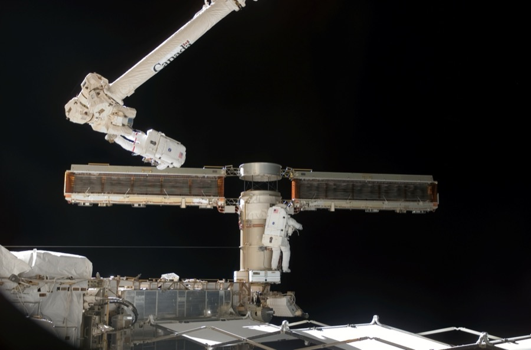

EVA operations — the spacewalk procedure end to end
Crack the airlock and 6–8 hours later you've put a payload on the truss. In between is the most procedural activity in spaceflight — 50+ choreographed steps, every one a chance to fail safely.
A modern EVA starts about 24 hours before egress. The crew reviews the procedure binder (now a tablet) — every tether transfer, every bolt torque, every contingency. Tools are pre-staged on the airlock wall in the order they'll be needed. The night before, the crew sleeps at reduced cabin pressure (10.2 psi on the US side; the Russian Orlan side skips this step because of suit-pressure differences — see the `eva-physiology` article). At T-minus 4 hours the crew is in-suit, mask-breathing pure oxygen to wash nitrogen out of body tissues — the prebreathe protocol. Pre-breathe is non-negotiable; skipping it causes decompression sickness ('the bends') from N₂ bubbling out as the suit depressurises.
Egress is the riskiest 15 minutes. The airlock depressurises to 5.0 psi for a leak check (no audible whoosh = no suit puncture), then to vacuum. The crew member opens the outer hatch, attaches a primary safety tether to a station handrail, attaches a secondary local tether, and steps out. Every modern EVA uses two-tether discipline by default: the body tether to the station, and a local fixed-point tether at the worksite. The third backup is SAFER — a small jet-pack worn over the suit. SAFER's only job is to fly an untethered astronaut back to the structure if both primary tethers fail. It's been carried on every US EVA since 1994 and used in anger zero times.
Most of the actual work happens at a foot restraint, called an APFR (Articulating Portable Foot Restraint). The crew clips their feet in, leaving both hands free; without it, every motion requires expending grip strength to counter Newton's third law. EVA tasks are arm-fatigue-limited long before they're metabolic-limited. The EMU glove (the US suit's pressure glove) is the single most physiologically demanding piece of equipment ever flown — fingernail damage is so common NASA tracks it as a known injury, and crews routinely tape their fingertips before egress. The Russian Orlan glove is slightly less rigid (lower suit pressure trade-off) and the Chinese Feitian glove is a re-engineering of Orlan's design.
While the crew works, ground controllers track three numbers in real-time: suit metabolic rate (heat the suit's sublimator is dumping), CO₂ in the suit (LiOH canister saturation), and suit consumables remaining (battery, water for cooling, oxygen). A typical 6-hour EVA budget is ~5 kg of water for cooling and ~1 kg of oxygen for breathing + leak make-up. If any of those track high, the EVA gets shortened. The longest EVA in history is STS-49's 8h 29min (1992); the typical ISS construction EVA was 6h 30min ± 30min.
Ingress is the reverse of egress: untether (last tether comes off last), repressurise the airlock to station pressure, doff suit, drink lots of water, sleep. The day after an EVA the crew is in negative water balance, has lost 2-3 kg of mass (mostly sweat), and has muscle soreness comparable to a marathon. Apollo lunar EVAs added a separate consideration: lunar dust. The Apollo suit gaskets clogged with lunar regolith, the suits couldn't be re-used after 2-3 EVAs, and crew members reported a sharp burnt-gunpowder smell after every ingress. The Artemis-program AxEMU suit attempts to engineer this problem out with redesigned gaskets + a dust-tolerant rear-entry hatch — borrowed from the Russian Orlan family, which never went to the Moon but did spend decades dealing with similar gasket-life issues.

SEE IN THE APP
- /iss Quest (US-side airlock), Pirs (decommissioned 2021), Poisk (Russian airlock) — where every modern EVA begins
- /tiangong Wentian module — Tiangong's primary airlock + EVA staging
- /fleet EMU, Orlan-MKS, Feitian, AxEMU — the four EVA suits currently in active service across the international fleet
- /missions Apollo lunar EVAs, every Shuttle assembly flight, ISS construction expeditions — each mission's flight-events timeline lists its EVAs